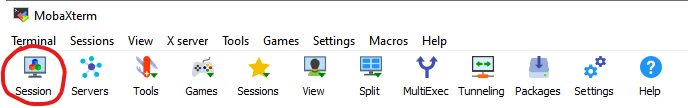

srun --pty bash -iBasics of HPC and HPC vs Personal Cloud provision
High performance computing (HPC) systems are large, multi-processor, large RAM ‘computers’ that are installed in data centres. Usually users are provided with a login to a shared HPC system with strictly controlled access and defined quotas. To run your informatic tasks, you write a script that sends your job to a ‘queuing’ program which coordinates the processing requests of all the users on the system. In this way the system can support large numbers of users, but you need to wait for your place in the queue before your task can be performed. Although you can do the very lightest tasks - copy small files, rename etc. - without sending them to the queue, most tasks need to go through the queue. This can be very tedious when learning to code, as if your script creates an error you won’t know until it has waited its turn in the queue.
To avoid the queues we provide personal cloud systems to each person on the course, allowing them to interactively use the HPC system. To do this we create a container which has the equivalent of a ‘virtual machine’ (VM) in the cloud; we use a system called Kubernetes to create these container-based virtual machines. Each user has dedicated processors, RAM, storage and their own environment so they can interactively learn to use a Linux system. Because we are having to reserve a proportion of the server for each user we can only allocate a limited number of processors and RAM to each user - usually this is 8 processors and 16 Gb RAM, but check with your course organiser.
Similar ‘containers’ can be accessed using AWS cloud services or through academic services such as CLIMB. AWS cloud does provide some educational free cloud processing but when these free credits are over you would need to pay for processing and storage, and this can very quickly get expensive. CLIMB provides academic registration if you are supported by specific research council funding.
This information below is aimed at students and staff in Cardiff University’s School of Biosciences, and will guide you through accessing the computing resources provided.
Personal HPC and HPC clusters
To access any Cardiff University HPC or personal Cloud resources you will need to install and log in to the University VPN - see instructions below.
As part of the teaching provision at Cardiff University you will be provided with a specific ‘login’ to your own Kubernete VM. You may also be given access to our teaching HPC cluster or our research HPC system.
Staff or postgraduate research students at Cardiff School of Biosciences can request access to our research HPC system by emailing biosi-biocomputinghub@cardiff.ac.uk with your University username and the name of your PI.
Check with your instructors which systems are available to you.
Cardiff University Taught Modules - Masters or Undergraduate
Logging into your person Kubernetes virtual machine
You will be provided with three pieces of information the host (or server) name, your user name (usually your staff ID or your student ID including the ‘small letter’ prefix), and a port number. Here are some examples (user names are fictitious). You will also need your standard University password.
Host Names:
sponsa.bios.cf.ac.uk
or
hawker.bios.cf.ac.ukUsername (student numbers usually have a small letter and 7 digits): c9999999 or sbixxx
Port (5 digit number): 32222
You may have received an email where the information is presented as a code block:
ssh c9999999@anax.bios.cf.ac.uk -P 32222
^ ^ ^
username host port
HPC cluster access: MSc Big Data students (part 2 of the course), postgraduate researchers or staff
If you are provided with access to either teaching or research HPC systems you will only be provided with a host or server name - your username and password will be your Single Sign-On (SO) for the University - your student/staff number and your standard password.
Servers currently used include:
Host Names:
gomphus.bios.cf.ac.uk
or
iago.bios.cf.ac.ukWith standard HPC the port number is always 22.
IMPORTANT Unlike the virtual machines, gomphus and iago both use slurm job scheduling software to manage access to resources in a fair and equitable manner. For running full-scale jobs you will need to learn how to interact with slurm correctly. However, for the purposes of playing around whilst learning, it is better to create a virutal session by running the command
You will need to run this every time that you log it. It will carve you out a little bit of space to interact freely with the machine whilst not interfering with others’ work or crashing the whole system!
Virtual Private Networks
A virtual private network allows you to access the internet as though you were in a different physical location. In a university context, it allows you to access resources that are only available on campus, not matter where you: are far as the internet is concerned, you are on the university campus.
Cardiff University uses different VPNs for staff and students. You need to use the correct VPN or the connection will not work: the VPN software will install and you will think all is well until it will not connect. To find the correct instructions, log in to the intranet and search for VPN. Here are the current links which have installation instructions:
Student VPN
Staff VPN
Once you have installed the VPN and connected test it by going to this site:
If all is working, you will see this:

If not, you will see this:
Once you have installed the VPN, you will need to connect to it every time you want to access the server from off-campus.
RStudio (and Jupyter notebook) Through Posit
R, and its trusty companion RStudio, are essential parts of any bioinformatician’s toolbox. Both can be easily downloaded and run on your local computer, but for the taught courses we provide you with a browser-based Rstudio interface as part of your virtual machine. The reasons for this are twofold: 1) it allows you to easily load data from your virtual machine into RStudio, and 2) it allows us to pre-install the packages you need, saving time in class.
We suggest testing your virtual machine login by connecting to the browser-based Rstudio, as this provides a straightforward test without the need for any software installs.
To access any Cardiff University cloud based RStudio you will need to install and login to the University VPN - see instructions above
Enter your cloud host name and username name in you browser navigation bar e.g.:
https://posit.sponsa.bios.cf.ac.uk/
^
Host/serverYou should now see the following screen:
Use your normal normal University username/password to log on, and the following page should be displayed.
Click on the + to create a new session.
Select the session you wish to create - for this example we will create a RstudioPro Session
Leave the default parameters as they are and start the session.
To enter the session click on the right arrow —>
You should now see the standard RStudio interface.
You are now successful logged on to the server - so you know that your account and password work!!
SSH: connecting to the server
To connect your local computer to a remote server, we use a technology called SSH: Secure Shell Protocol (I know, the acronym doesn’t really match the name). This is a way of establishing a secure connection between your computer and the server. In effect, your computer becomes a remote control, sending instructions to be carried out on the server.
SSH using MobaXterm - connecting to the server on a PC
MobaXterm is an excellent piece of software that supports SSH and enables you to create a SSH connection between your PC and the server. It has a built-in SFTP (Secure File Transfer Protocol) for file transfer, X-forwarding (graphical emulation) for using graphical applications remotely, and allows you to open multiple windows to your server. You can download the MobaXTerm from their website.
Using MobaXterm on your personal PC
I suggest downloading and installing the ‘Installer Addition’ as it will fully install on your system. In contrast, the portable version provides a simple executable (.exe) that can be placed on a data pen or used in machines where you do not have administrator privileges to install software.
Using MobaXterm on a University-networked PC
You will not have administrator privileges to install the ‘Installer Addition’ on a University-managed machine. Instead, download the portable version which provides a simple executable (.exe) that can used on a machine where you do not have administrator privileges to install software.
Once your download is complete, you will need to unzip the folder (extract files) before you can run the installer. Then follow the installation instructions and you should be faced with the following window:

N.B. The first time you open MobaXterm, Windows security may pop up saying that some features are blocked by the firewall. Click ‘Cancel’ and the message will go away without preventing MobaXterm from doing its thing.
Now you want to create a session, this can be done by following these easy steps:
- Select Session icon

- Select SSH icon

- Configure your SSH connection by filling in boxes for -Host -User and -Port
N.B. - the three elements you need to complete are underlined in red in the image.
N.B. - for standard HPC the port leave the port at the default value of 22

- Enter your passphase
You will NOT see any typing - this is a security feature, just continue typing
Once you have entered your password and it has been accepted you MAY be asked to save a master password - this you can set to whatever you wish, if you want to save yourself the trouble of typing your pass phrase every time you connect.
Once created, your ‘session’ will be saved in the left hand menu and in future you just have to click on it to connect.
SSH using a terminal - connecting to the server on a Mac
HPC servers - both your personal cloud as well as HPC systems - are based on a Unix Operating System called Linux. Mac OS is also based on this system, so connecting on a Mac is very simple. First you have to find and open your Terminal - I think the easiest way is to search for it in finder but if you don’t find this easy there’s a wiki entitled - Open-a-Terminal-Window-in-Mac.
Once you have your terminal open simply type:
ssh [user]@[host] -P [Port]
#a fictious example would be
ssh c99999@sponsa.bios.cf.ac.uk -P 32222For standard HPC (i.e. not Kubernetes) there is no need to define the port with -P
Then enter your password and you are in - you can tell it has worked because the text preceding your cursor changes and should look something like this (the numbers will probably be different for you):
[user@ssh-user-894cfb776-88kzg ~]$Unfortunately the standard SSH interface does not support X-forwarding for graphical applications. There is a mac application called (Xquartz)[https://www.xquartz.org/] that you can install, and when it is running you can create a X-11 session by simply adding -X to your login so your login would be:
ssh -X [user]@[host] -P [Port]
#a fictious example work be
ssh -X c99999@sponsa.bios.cf.ac.uk -P 32222Don’t worry if you don’t understand the bit about Xquartz - it’s not essential, just know that it’s here for future reference if needed. Xquartz is open source software and Mac DO NOT SUPPORT it, so it can be challenging to get working. Newer Macs often do not support it as the open source developers haven’t kept up with changes in the OS. Play if you want too, but be warned that it can be frustrating.
SFPT: transferring files to and from the server
You will often want/need to transfer files between the server and your local computer. We can do this using SFTP (Secure File Transfer Protocol), for which there are multiple software options. If you have a PC and are using MobaXterm to access the server, it’s easiest to use MobaXterm’s built-in SFTP function. If you are connecting via the terminal on a Mac, you’ll need to install either FileZilla or Cyberduck (you can also install these on a PC if you want to) .
SFTP using MobaXterm on a PC
MobaXterm has a built in SFTP function. When you open your session, a folder structure appears down the left hand side of the screen. This can be useful for navigating and for opening files without the need to download them.
Use the arrows above the SFTP windows to upload/download files - you can also drag and drop files using this. window.
SFTP using FileZilla
(FileZilla)[https://filezilla-project.org/] is a open source program that works on all platforms and supports multiple upload and download options including SFTP.
To configure FileZilla follow the steps below and this will create a saved profile you can go back to:
- Open and select profile icon
- Configure your SFTP profile
Remember for standard HPC the SFTP port will default to 22; if you are working on a Kubernetes virtual machine you will need to change it.

Select Connect and you are done - you can return to this session next time you want to transfer
- Drag and drop your files from local to server (remote host) system

SFTP using Cyberduck
[Cyberduck][https://cyberduck.io/download/] is another free file transfer application that supports all type of file transfer including SFTP, and some people prefer it to FileZilla as it has a very simple interface.
After downloading and installing the application open the transfer window by using the following steps:
- Open a Cyberduck connection
- Configure the connection - complete all the things underlined here.
Use your port number provided for Kubernetes, or if using standard HPC use port 22.
- You can now navigate around the server and drag and drop files to and from server.